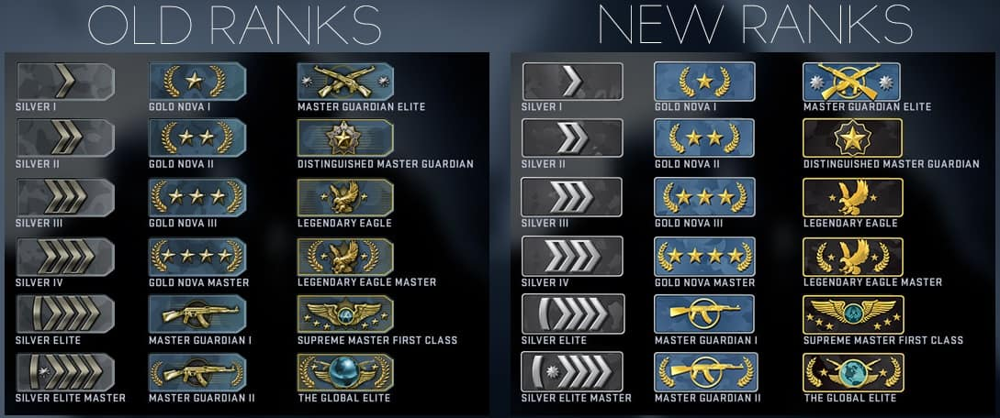

Counter-Strike: Global Offensive or commonly known as CSGO is a first person shooter developed in 2012 by Valve and Hidden Path Entertainment, today it is currently available on Windows, OS X, Xbox 360, Playstation 3, and Linux. In December 2018 the game was made free to play. The game is compromised of two teams, these are the counter-terrorists and the terrorists. The goal of the game for the terrorists is the blowup one of the two bombsites on the map or eliminate the other 5 counter-terrorists. The goal of the game for the counter-terrorist is to stop the bomb from being planted, defuse the bomb, or elimate the other 5 terrorists.
To play CS:GO you will most likely need a couple things before hoping into the game, for how to play the game everything I will be referring to will be PC related, and not from the console versions of the game. So, firstly before we start playign the game you must have a Steam account and a copy of the game, currently the game is free therefore you will not have a problem obtaining a copy. Learning the basics of CS:GO is like almost every FPS game where you shoot to kill, but if you want to constanly improve at the game you will need to put in effort into learning the game, this includes reading guides, watching professional play, practice for countless hours, and do not forget to have fun playing the game. Another thing that is highly recommended is to own a headset with a microphone available to talk to teammates in-game. Now that we have some requirements, we are ready to play. Before you start playing for ranked you have to get to level 2, this can be obtained easily through casual play and gain experience points through that. When playing the game you will realize instantly two things, there is no iron-sights (zooming in your gun) and there is an economy system to the game. Because of these two things this is what makes CS:GO different from franchises such as Call of Duty, because the guns do not have the function of zooming in, you have to take advantage of your crosshair placement (where you place the crosshair on the enemies body), damage on an enemy changes based off where you put your crosshair. Normally you will want to aim at the head as it secures the most damage. With crosshairs, also comes guns. You will want to pick normally an AK-47 if you are a terrorist and a M4A4 or M4A1-S on counter-terrorist. If you want a sniper an AWP is a perfect example of one you can buy if sniping is more what you want. Secondly the economy system works based on how many people you kill, with what guns you kill the enemy, if you plant the bomb, if you defuse the bomb and whether you lost or won the round. These are the two differences mainly that CS:GO has that other games might not have. Learning how to improve your aim and controlling your economy and the economy of your team is a vital point of winning games. To have examples of pro play, you will have search up guides and pro-players which I will mention briefly, and how esports can be great for new players to watch.
In my opinion, I think Counter-Strike is both a game to enjoy with friends and to enjoy for a competitive environment. This is a great example of a well made FPS game and offers different types of strategies and teamwork due to the wide range of maps available and the teammates you get will most likely be different every single time, because of this it is both a great game for people who seek a competitive version of the game and great for people who want to play with 4 other friends. Apart from this my review will be focusing now on a competitive version of the game which is what I am fimiliar with because I have played many hours and from my personal opinion, the higher ranked you get, the easier you can get bored of the game. The reasons for this, for example after playing one map for about 150 hours you have a good idea where everything is and where everything will be at a given time, because of this the game can get boring as it is a situation as kill someone or be killed. Another problem with getting higher ranked is that you will face a lot more people who are cheating because acquiring cheats is a very easy process, this has become more of a problem since the game has gone free. Before December 2018, CSGO was a 15$ Steam game. Now that the game is free, people who get banned for cheating can just create a new account and keep cheating, these are the two main problems of CS:GO but do not let these problems from making you play the game because if you have just gotten the game you will definetly get your time's worth out of it as I have over the past 4 years.
The ranks in CS:GO shown in the picture, shows that the lowest rank is Silver 1, and the highest rank being Global Elite. Most of the community of CSGO occupies the Gold Nova range which is just above Silver and if you are there you have a firm grasp of the game and are an average player. If one reaches Global Elite, you are considered a very good player in the eyes of CS:GO and if you still think you can improve there are ways that you can become a professional player, such as ESEA, or FACEIT. A brief description of FACEIT and ESEA is that they are third party programs with advanced cheat engines which are better than the ones offered in CS:GO, because most players in CS:GO at Global Elite that are not already professional most likely have a cheat of some sort. This is why people who want to become professional use these third party programs, and usually professional teams scout these third party sites for players rather than in the highest ranks of the game itself
Esports is highest level of competitive play in CS:GO where players who have earned the title "professional" can show off their skill with their teams to end up winning millions of dollars in the finals. Watching professional players play at the highest level can be difficult so I have provided a video for what you should look out for during the game, now, more about Esports. Unlike some other games, CS:GO's Esport scene works much like the game of tennis, this is because there are big events, but there is also weekend tournaments where a team is crowned a champion on that weekend, and when that weekend is over nothing carries into the next tournament. Now you might think this is boring, but normally smaller teams who want to make a name for themselves enter these weekend tournaments, but the bigger and better teams will enter tournaments only held once or twice a year, this is reffered to as the "Majors".